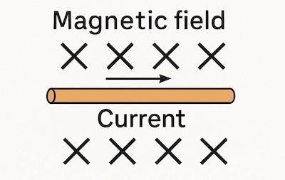

Place a straight wire horizontally between the poles of a strong magnet so that it lies at 90° to the magnetic field. Connect the wire to a DC power supply through a switch. When the current flows, the wire will experience a force and move.
This demonstrates the motor effect and the force which moves the object is known as the Lorentz force. Reversing the current or magnetic field reverses the direction of the force:
There are two mnemonics that help us determine the relative directions of current, magnetic field and the force: the Right-Hand Palm Rule, which was used in the video above, and Fleming's Left-Hand Rule.
The Right-Hand Palm Rule is a helpful mnemonic used to determine the direction of the force acting on a current when it travels through a magnetic field. Use your right hand with the palm and fingers straightened:
Fleming’s Left-Hand Rule helps determine the direction of the force acting on a current-carrying conductor placed at right angles to a magnetic field. Use your left hand:
By aligning any two of these quantities at right angles, you can determine the third.
Note: as we are dealing with vectors in 3-dimensions, we need to introduce two symbols for when the vectors cannot be represented on a plane surface such as the screen of the device you are using right now, or the piece of paper on which these vectors are drawn. A cross represents a vector with direction into the plane while a circle with a dot represents a vector with direction coming out of the plane.

Vector going away (image on left) and vector coming towards you (image on right)
|
A straight wire carrying current is placed horizontally between the poles of a magnet, with the magnetic field directed into the page. The current flows from left to right. In which direction will the wire move? A. Upwards |
When a beam of charged particles, such as electrons or protons, travels through a magnetic field, each individual particle experiences a magnetic force. This force arises due to the motion of the charged particles being perpendicular to the magnetic field, and it acts in a direction that is at right angles to both the velocity of the particle and the direction of the magnetic field.
This force does not change the speed of the particle, but continuously changes its direction, causing the particle to follow a circular or helical path. The radius of the path depends on the particle’s mass, speed, charge, and the strength of the magnetic field.
Using the simulation below, change the charge of the particle or the strength of the magnitude field and observe how the deflection of the charged particle changes.